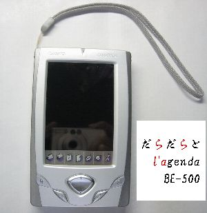

だらだらと l'agenda BE-500
「l'agenda BE-500」とは2001年10月20日カシオが発売したPDAです
2004年1月に秋葉原にて購入したので（遅っ）
ある程度だらだらと「攻略してみよう」といったメモページです

| ▼Tips 1 | 「Yahoo!BB 無線LANパック」＋「プラネックス GW-CF11H」で無線LAN | [04.01.18] |
|---|---|---|
| ▼Tips 2 | ソフトウェアの導入について <入門者向け> | [04.01.22] |
| ▼Tips 3 | l'agendaをAirH"PHONEに繋いで、つなぎ放題 | [04.02.04] |
| ▼eXpod | eXpod導入、そしてPocketPC情報 | [04.02.13] |
| ▼2ch あさり | 有益そうなものを貼ってみます | [04.03.02] |
| ▼エミュレータ | NESなど、ゲーム関連のものが多いです | [04.01.21] |
| ▼だらだらとメモ | 本当にだらだらとメモっています | [04.03.02] |
| ▼PDA SITE Station | PDA向けのサイトリンク集 | [04.02.23] |
[最新の日記] → だらだら日記へ
2004.3.2 10:50
管理人：いわだら [ date18@gmail.com ] |